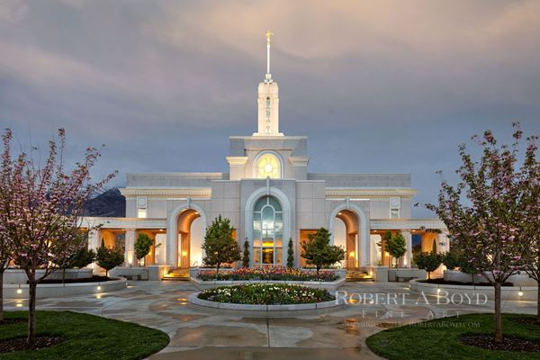

- Scheduled Temple Closures
Temple Services
Clothing Rental Available
Distribution Center Nearby
Rexburg, Idaho Temple
The Rexburg Idaho Temple is the 125th operating temple of The Church of Jesus Christ of Latter-day
Saints (LDS Church).
Announced in late 2003, the temple was dedicated on February 10, 2008 and
was the first temple dedicated by Thomas S. Monson as the church's new president.
The Rexburg Idaho Temple was the third LDS temple in Idaho.
